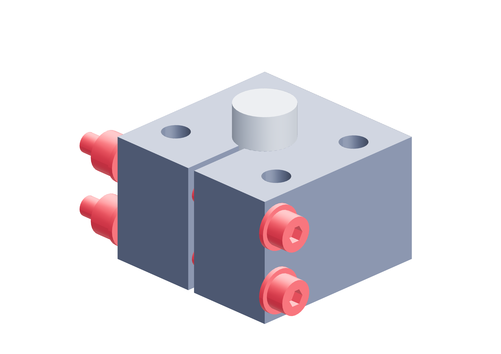

Preparation / metal32 / 179
Set both clamp bolts with the torque tool
A controlled bolt setting precedes the measured hub proof. Increasing bolt torque to rescue a slipping hub exceeds this build’s clamp setting.
AddNo new parts
Tools / setupLEXIVON cam-over torque screwdriver · H3 metric bit · 7 mm wrench · supplied calibration certificate

| Property | Required setting / record |
|---|---|
| Tool setting | 25 in-lb / 2.8246 N·m |
| Clockwise tool upper bound | 2.9376 N·m at +4%; below 3.0 N·m ceiling |
| Grip qualification | Every hub: its assigned complete torque interval, both signs |
- Record the tool’s supplied calibration certificate and serial; confirm its clockwise accuracy and setting units.
- Fit the H3 bit and hold each locking nut stationary with the wrench. Drive clockwise at the bolt head.
- Alternate the two bolts through 10, 20 and finally 25 in-lb settings; let the cam-over tool trip at each setting.
- Record both bolts’ setting and add witness marks. Nylock drag is included in the indicated torque and reduces clamp preload.
Ready when
Both bolts have recorded controlled settings, the shaft fit remains smooth and the joint is ready for supported torque proof. A failed tool certificate, damaged bit, distorted bore or later failed grip proof rejects this setting/joint. Correct the fit or replace the hub; never raise clamp torque to obtain a pass.